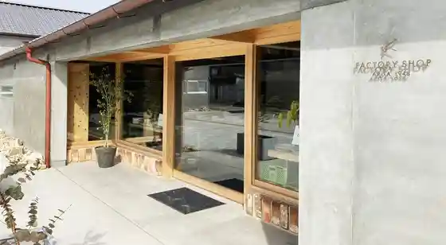
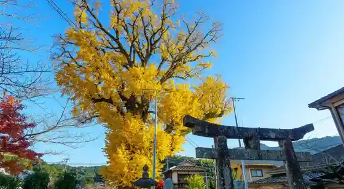
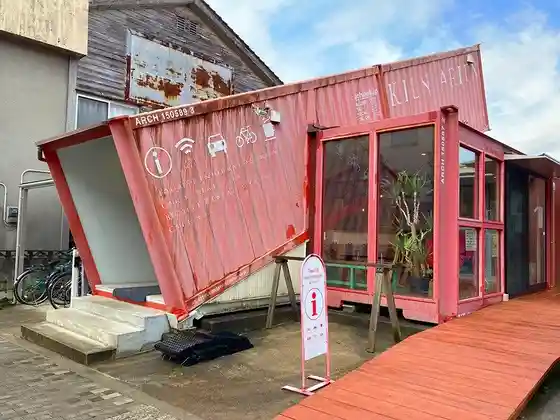
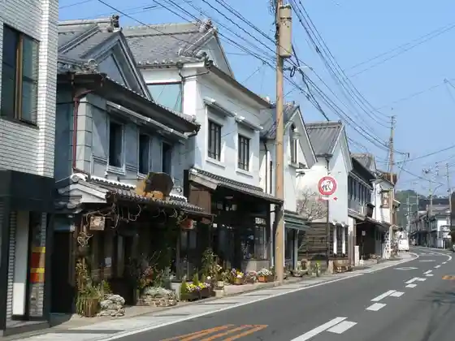

Kin Zen Seito Tokoro FACTORY SHOP
Arita, Saga · 0955-43-3268 · Official / source link

Izumiyama Benzaiten no Taiko Mago Ki
Arita, Saga · 0955-46-2500 · Official / source link

KILN ARITA Tourist Information
Arita, Saga · 0955-42-4052 · Official / source link

Uchiyama Chiku no Streetscape
Arita, Saga · 0955-43-2121 · Official / source link

Kurokami Yama
Arita, Saga · 080-2157-0357 · Official / source link
KIHARA
Arita, Saga · 0955-43-2325 · Official / source link
Suyama Shrine
Arita, Saga · 0955-42-3310 · Official / source link
Munemasa Shuzo
Arita, Saga · 0955-41-0020 · Official / source link
Koran Sha
Arita, Saga · 0955-43-2132 · Official / source link
Fukagawa Seiji Chaina On Za Park
Arita, Saga · 0955-46-3900 · Official / source link
Kyu Tashiro Ie Seiyokan
Arita, Saga · 0955-43-4866 · Official / source link
Arita Poserin Park
Arita, Saga · 0955-41-0030 · Official / source link
Ryumon Kyo
Arita, Saga · 0955-46-5616 · Official / source link
Arita Onsen
Arita, Saga · 0955-42-6988 · Official / source link
2016/SHOP
Arita, Saga · 0955-42-2016 · Official / source link
Fukagawa Seiji Main Shop
Arita, Saga · 0955-42-5215 · Official / source link
no Ri to Kama
Arita, Saga · 0955-43-2890 · Official / source link
Gyararii Arita
Arita, Saga · 0955-42-2952 · Official / source link
Nihonryori Yasuna
Arita, Saga · 0955-42-2733 · Official / source link
Dokuritsu Shien Workshop (Akae Za)
Arita, Saga · 0955-41-1310 · Official / source link
Sumomo Sanhei no Hi
Arita, Saga · 0955-43-2121 · Official / source link
Daikichi Village
Arita, Saga · 0955-25-9003 · Official / source link
Ryumon Campground
Arita, Saga · 0955-46-4022 · Official / source link
Arita Folk History Museum Higashikan Arita Yaki Sanko Kan
Arita, Saga · 0955-43-2678 · Official / source link
Izumiyama Jishaku Ba
Arita, Saga · 0955-46-2500 · Official / source link
Experience Workshop (Rokuro Za)
Arita, Saga · 0955-41-1302 · Official / source link
Gen'uemon Kama
Arita, Saga · 0955-42-4164 · Official / source link
Saga Prefectural Kyushu Toji Bunka Kan
Arita, Saga · 0955-43-3681 · Official / source link
Imaemon Kama
Arita, Saga · 0955-42-3101 · Official / source link
Gaku no Tanada
Arita, Saga · 0955-46-5616 · Official / source link
Experience : Koraku Kama Kojokengaku & Torejahanteingu
Arita, Saga · 0955-42-4121 · Official / source link
Arita Uchiyama no Juyo Dentoteki Kenzobutsu Gun Hozon Chiku
Arita, Saga · 0955-43-2121 · Official / source link
arita mononosu
Arita, Saga · 0955-42-3164 · Official / source link
Aritasera /Arita Sera
Arita, Saga · 0955-43-2288 · Official / source link
Tombai Hei
Arita, Saga · 0955-43-2121 · Official / source link
Kaneao
Arita, Saga · 0955-43-3070 · Official / source link
Arita Toji Art Museum
Arita, Saga · 0955-42-3372 · Official / source link
Arita Tourism Association
Arita, Saga · 0955-43-2121 · Official / source link
Experience : Kimo no Dearitasanpo
Arita, Saga · 0955-43-2121 · Official / source link
Rekishi to Bunka no Mori Park
Arita, Saga · 0955-46-5010 · Official / source link
Kakiemon Kama
Arita, Saga · 0955-43-2267 · Official / source link